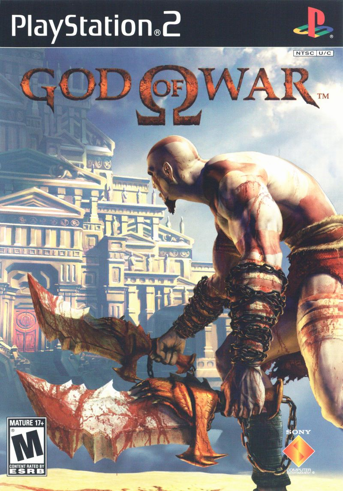

O enredo trata das aventuras de um garoto chamado Ben Tennyson,
sua prima Gwen e o avô Max. Após manter contato com forças
extraterrestres, Ben recebeu o poder de se mutar, tomando diversas
formas alienígenas.
Música tema
Shrek Super Slam
A fórmula é o bom e velho duelo um-contra-um. Até quatro jogadores podem competir
simultaneamente
com vinte personagens - incluindo Shrek, o Burro, Princesa Fiona, Gato-de-Botas, Príncipe
Encantado,
entre outros, cada um com suas armas e golpes especiais.
Música tema
Madagascar
A história do jogo gira em torno de quatro animais: Alex, Marty, Melman e Gloria. Depois de seu
aniversário, Marty sente que sua vida no zoológico de Central Park é sempre a mesma coisa e
decide voltar para a natureza. Com a ajuda de quatro pinguins, a zebra escapa e então se inicia
a trama.
Música tema

God of War
Baseada em distintas mitologias, a história segue Kratos, um guerreiro espartano que foi levado
a matar sua família por seu antigo mestre, o deus da guerra Ares. Isso desencadeia uma série de
eventos que levam à guerras com os panteões mitológicos.
Música tema
Mafia
Tommy Angelo, um taxista de Lost Heaven, estava na hora e no lugar errado. Uma dupla de
gângsteres
em meio a uma fuga se deparam com todos os pneus furados e prestes a serem baleados por seus
rivais.
Sendo o único carro no meio da rua àquela hora, Tommy recebe uma oferta que ele não pode
recusar.